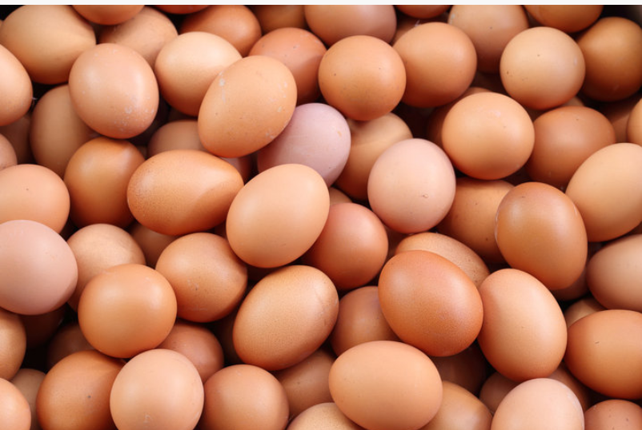

Fresh Eggs and home-made Atchaar
Bringing freshly packed eggs and homemade atchaar straight from our street stall to your table in Pretoria.
Our Story
Welcome to our street vendor business where we proudly specialize in selling fresh eggs and homemade atchaar. This journey started with a simple passion of bringing everyday essentials and traditional flavors directly to the community. Our eggs are sourced with care to ensure freshness and quality. We offer trays in different sizes which are 6, 18, 30 and 60 to suit every household’s needs and affordability. Whether you are a family cooking breakfast, a baker preparing for orders or a small food outlet stocking up, we make sure you get the right quantity at the right price. Alongside our eggs, we prepare our signature atchaar using traditional recipes passed down through generations after generations. The atchaar is Bold, tangy and full of flavor and it is the perfect companion to pap, bread or meat dishes. For us, selling eggs and atchaar is not just about food but it is about sharing a taste of home and heritage with every customer who stops by.
What makes our business special is the way we combine affordability with accessibility. We know that life is busy and people need a quick and reliable access to essentials without breaking the bank. That is why we set up in a bustling market street, where customers can easily find us while going about their day to day activities. Some buy in bulk while others pick up just what they need and we welcome them all with the same friendly service. Our eggs are always fresh and our atchaar is prepared with love and care ensuring consistent quality that customers can trust. Over time this reliability has built strong relationships, we do not just sell food but we connect with people. Many of our customers return not only because they enjoy our products but because they feel a personal bond with us. That trust and loyalty are at the heart of our business and we work hard every day to honor it.
Beyond serving food, our business is about community, culture and entrepreneurship. Street vending is more than just a way to earn a living but it is a way to keep traditions alive and support families in the neighborhood. By selling eggs and atchaar, we are not only meeting nutritional needs but also celebrating local food culture. Atchaar, especially, carries memories of family meals and shared gatherings making it more than just a condiment but a symbol of heritage. Our presence in the market adds to its lively atmosphere where commerce and culture come together. Looking ahead, we see opportunities to grow by adding more essentials like bread, spices or cooking oil creating a one-stop shop for our customers. With word-of-mouth, signage and now this website we hope to reach even more people and strengthen our brand identity. To us, this business is more than selling but it is about resilience, tradition and the spirit of community and we are proud to share it with you.